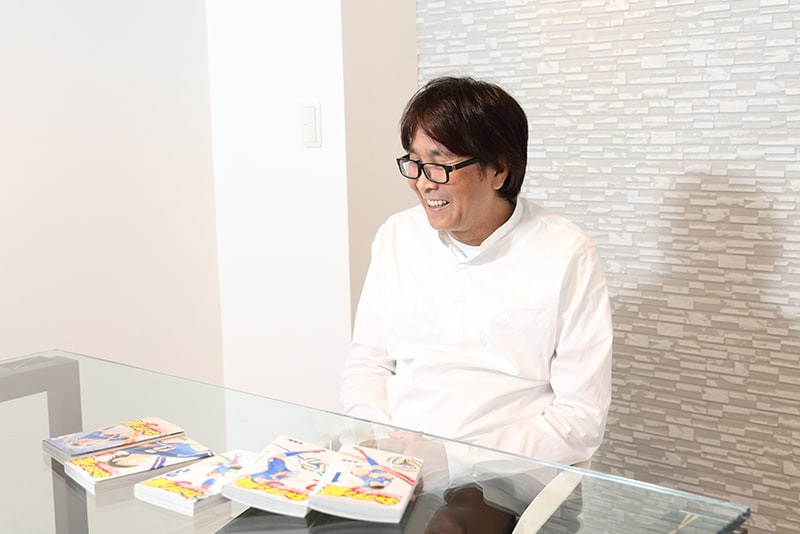
连载开始当时，"世界杯"这个词都还没普及
《队长小翼》随本次发售的《RISING SUN》第 6 卷达成了系列通算 100 卷。首先请谈谈直率的感想。

听到"马上要到 100 卷了"的时候，只是很自然地想"画了好长啊"，仅此而已（笑）。因为我并不是把 100 卷当作目标在画的。不过偶尔会看到"《乌龙派出所》出到 200 卷了""《骷髅13》新刊出到第 1XX 卷了"之类的话题，那时也会想想"《翼》现在出到多少册了呢？"
以单一体育运动为主题的漫画能到 100 卷相当罕见。您自己分析过能长年画下去的秘诀在哪里吗？
我想是因为登场人物作为角色的"强度"吧。他们的魅力对读者来说大概还没有褪色。虽然是作者自己来说有点不好意思（笑）。
翼以外也有很多主角级的角色。此前就画过不少以日向小次郎、葵新伍等人为中心的故事。
今天想借系列 100 卷纪念之机，从最初的《队长小翼》回顾起。连载开始的 1981 年，日本还没有 J 联赛，足球文化自然也没有扎根。
是啊。我自己当时也是个棒球少年……（笑）。
现在重新读第 1 卷会发现：有翼问妈妈"为什么日本的足球不那么兴盛"的场面，还附有对"世界杯"一词的解说，让人惊讶于当时足球所处的环境与现在完全不同。
"世界杯"确实是个还远未普及的时代。不过足球这项运动本身，学校体育课也会上，并不算多么奇特的冷门运动。只是当时还没有大热的足球漫画。
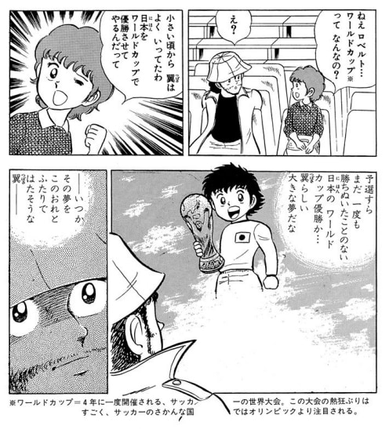
在这样的环境中，为什么选择足球作为题材？
影响最大的是高中时看了 1978 年阿根廷世界杯。当时我自己没有足球知识，只是单纯作为运动爱好者观看，但觉得非常有趣。那时我已经立志当漫画家、画的是棒球题材，就想能不能以足球为题材，把在世界杯上看到的足球魅力传达出去。
自己觉得"画过头了"的场面
开始连载后，是从哪个部分开始感到反响的？
画完最初的南葛小与修哲小对抗战时，隐约摸到了"足球漫画这样画应该没问题"的感觉。另外，序盘读者问卷成绩不太好，但翼使出倒挂金钩那一回人气一下子涨了上来。那时我意识到"读者想要的是这种东西"。
果然少年漫画里这种必杀技、超级球技很重要呢。
这是日本传统体育漫画的脉络吧。《巨人之星》有超大联盟球。我从小就是坦然接受、觉得有趣地看过来的人，所以是把它替换成足球的印象。
比如日向踢进混凝土墙的老虎射门、火野转体一周的龙卷风射门，读起来确实让人热血沸腾。
不过离现实太远也不好，"火候"很难拿捏。这里本是个能不断升级的部分，但画过头就变成超人漫画了。
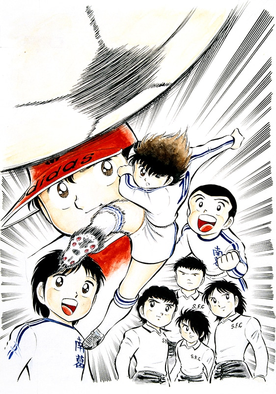
顺带一问，必杀技的灵感来自哪里？
有来自至今看过的漫画，但更多的可能是足球以外的其他运动。
泰国代表康萨瓦特 3 兄弟用的是藤球的技。若岛津用的是空手的手刀和正拳突击，立花兄弟的合体技"斯凯拉布飓风"是看职业摔角双打赛想到的。
最近不怎么去了，但以前经常去看职业摔角。实况的"啊——！"那一部分，也受到古馆伊知郎的影响。
作品中登场的技里，有您自己偏爱的吗？
中国的肖俊光的"反动蹴速迅炮"意外地是我喜欢的。通过把对手的射门打回去来提升威力。
个人倒是被西班牙米迦勒的那记盘带冲击到了……那是先把球踢出去加力，然后人再踩上去前进的技。发想是……"要是能踩着球前进该多开心啊"，哧溜一下（笑）。
《队长小翼》曾作为与 J 联赛的合作企划，由现役 J 联赛选手再现了剃刀射门和反动蹴速迅炮。作品中的技里，有没有"这个画过头了"的？
有（笑）。"斯凯拉布飓风"也稍有过头，但为了防住它而让来生和泷爬上球门这一点不太好。那本来就是犯规（笑）。
翼进球的那一回，是绝对必须拿下人气的
说起《周刊少年Jump》，以读者问卷结果决定腰斩的机制非常有名。特别是《队长小翼》连载的时代发行量约 400 万册，加上动画化作品也多，生存竞争是否非常残酷？
是的。连载很长、随时代不同，当时一起连载的是《筋肉人》《北斗神拳》，还有《猫眼三姐妹》《城市猎人》，以及《IQ博士》《龙珠》。
但比起"赢了那部作品真高兴"，"不想被腰斩"的心情更强烈。比如正在画全国大会，却在八强时被腰斩，作为作品就完了。
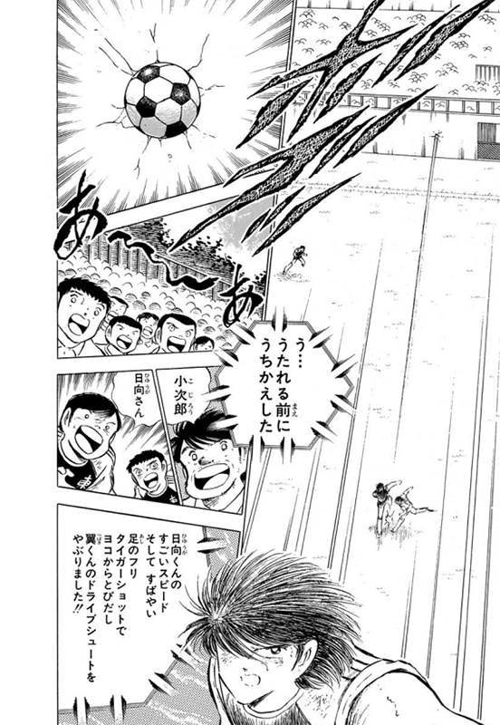
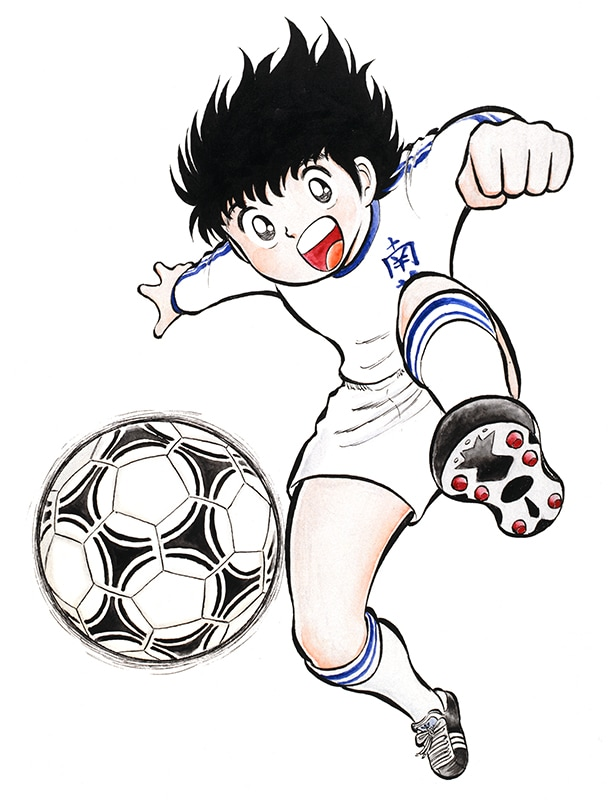
与其说和其他作品竞争，不如说更多是和自己的战斗。
是的。特别是连载开始的 3、4 话，我非常苦恼地想着"怎样才能拿下人气"在画。不过熬过最初的 10 周后，故事一高潮问卷就会变好。翼进球的回人气必然上升，我自己也把它当作"绝对必须拿下人气"的回来画。反过来，没有进球之类华丽场面的低谷回人气难免下滑，如何在心中平衡这两者，是我一直在考虑的。
《队长小翼》的女性人气也很惊人呢。单行本卷末附录里载有女性读者的"多让○○出场！"来信和被美化角色的插图。当时能听到这么多女性粉丝声音的少年漫画很罕见。
哈哈哈，是吗。不过确实，情人节时寄给角色们的巧克力一箱一箱地到过好几箱呢。光靠 Jump 读者终究以少年为中心，动画化后各种各样的观众都看到了，或许影响很大。
女性人气最高的，是岬还是日向吧。比起翼，配角的更高。
足球先进国的人们也觉得有趣
《队长小翼》的人气爆发，据说也增加了日本的足球人口。而且动画在海外播出，世界级的球员也公开表示受到《队长小翼》的影响。
这真让人高兴。也让我确信自己的足球观、画法没有错。
我看足球时想着"要是能这样就好了""能不能踢出这样的球"并表现在作品里的部分，能被生来国家就有足球文化、来自足球先进国的职业选手觉得有趣，我感慨很深。
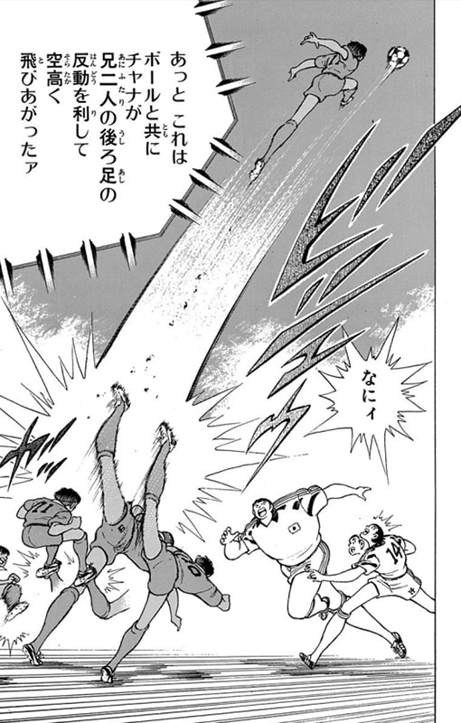
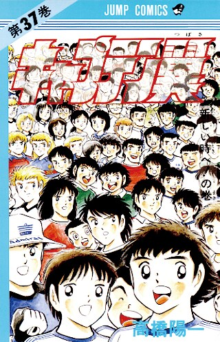
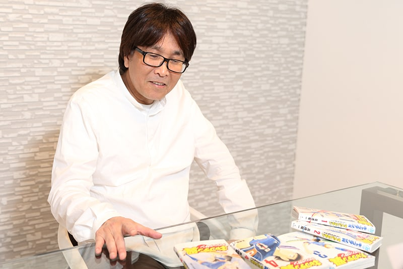
《队长小翼》能如此风靡世界，足球作为在世界范围广泛开展的运动也是很大原因吧。
我去海外旅行时，大家都认识"小翼"。我常感到足球这种文化本身就是连接世界的载体，也觉得以足球为题材画漫画真是太好了。
与岬不同的、翼的搭档
《队长小翼》曾一度完结，经历《世青篇》，载于《Young Jump》《Grand Jump》描绘职业赛场。登上青年志后有什么意识上的变化吗？
没有特别因为青年志就怎样。单纯是角色成长了、杂志也随之前行的印象，做的事与少年志时代几乎一样。只是翼也长大成人，家庭话题自然增多了。
《队长小翼》给人强烈印象是描绘足球快乐的作品，但成为职业选手后，不得不描绘痛苦的部分。
随角色成长，他们的烦恼也在变化，坚持足球路上的痛苦当然必须画。比如转会谈判，比如翼加入球队就意味着有人被裁掉的现实。
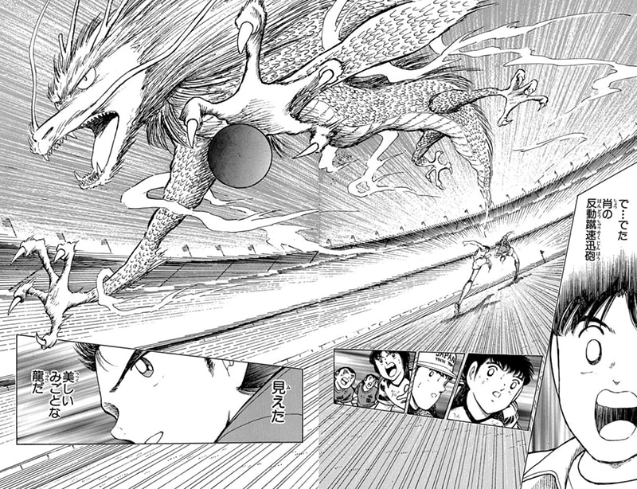
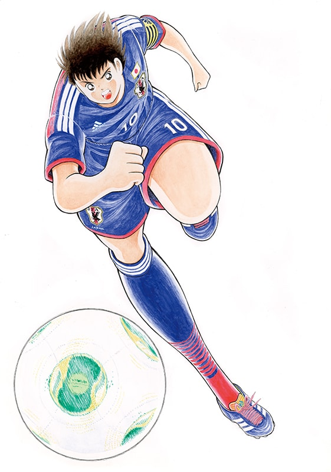
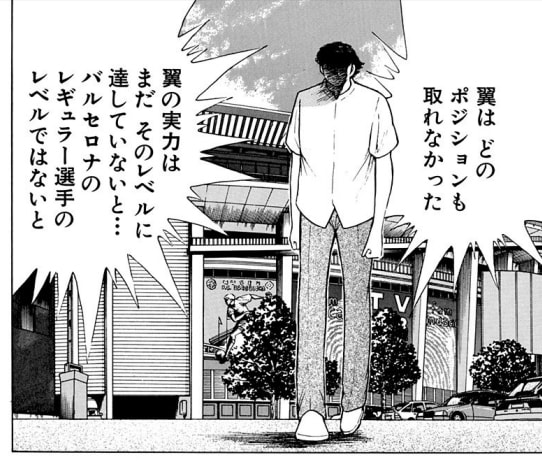
很多读者只熟悉少年 Jump 时代的《队长小翼》。如果要向他们推荐现在的作品，您会强调哪个部分？
早期系列登场的角色的成长吧。最近迪亚斯很活跃，之后施奈德也会登场。虽然很长（笑），但若能从没读过的部分拿起就太好了。
热门作的续篇常以第一作的角色为中心，但本作既画初代角色，《世青篇》以后的角色也立得很稳。从《世青篇》登场的葵新伍和拿多雷扎是很好画的角色，最近巴西队长利瓦乌尔画起来也很开心。
反过来，有没有成长超出当初预想的角色？
石崎君最初登场时，没想到他会是能留到现在的角色。超出我想象地一直活了下来。
他从第 1 话就出场，作为喜剧调剂不可缺少。对翼来说，他是与岬不同形式的搭档。现在都进日本代表了。
今后的"世界杯篇"……
达成通算 100 卷的今年应该会有各种媒体展开，8 月将有舞台版《队长小翼》上演。这次取材的前一天正是舞台的记者会见，听说集结了身体能力很高的演员。
因为这是动作很多的作品。除舞台外，此前也几次有过真人化的提议，但用真人描绘《队长小翼》的世界观很难、门槛很高，所以没能实现。这次我也明确表示过"不喜欢因为各种漫画舞台化正在流行就像跟风那样去做"。工作人员则说"我们不是为了赶流行，而是想做能向世界推出的娱乐作品"，我才点了头。
昨天的会见上也说明了：曲线射门用影像再现，"斯凯拉布飓风"据说是演员真的要跳。
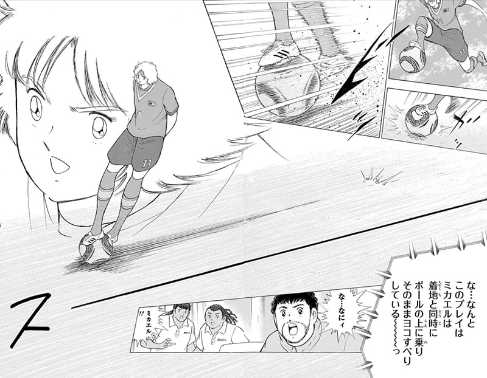
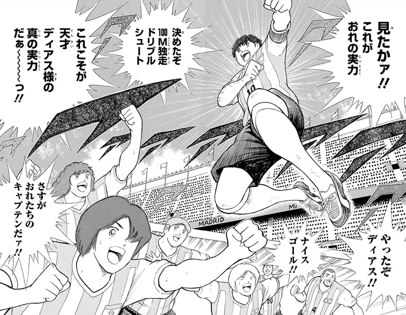
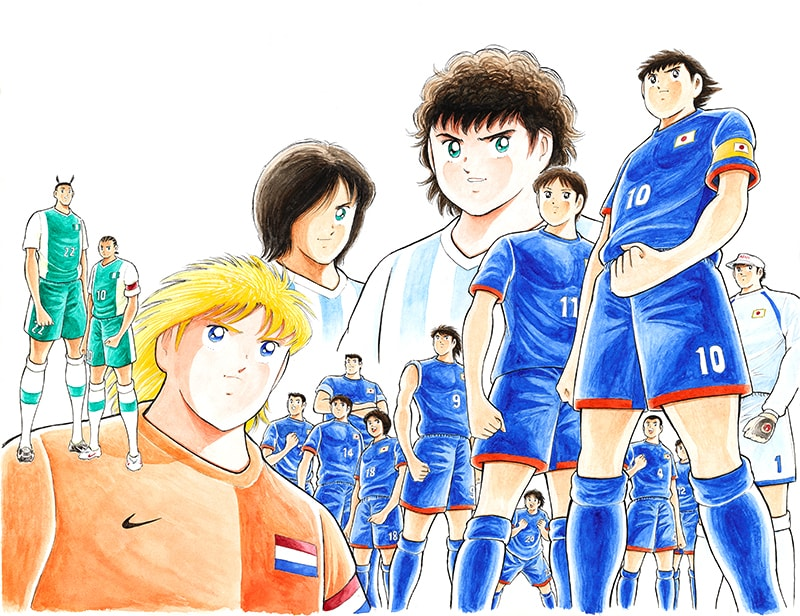
非常期待能再现到什么程度。顺带一问，今后在《RISING SUN》或下一个系列里，有想画的故事吗？
《RISING SUN》是马德里奥运的故事，当务之急的目标就是把那届奥运画完。
关于今后的展开，翼从初期就一直举着"成为世界第一的球员""让日本赢得世界杯"的目标。但即使是虚构的世界，日本在世界杯夺冠的描绘也几乎没有。
一直在说呢。连载开始时，日本参加世界杯本身就是遥不可及的梦。但现在参赛已是常态，也进过 16 强，所以现实中按 8 强、4 强、夺冠的台阶走也不是不可能，在漫画里描绘世界杯夺冠，也并非不可能的事了。
作为读者还是想在《队长小翼》里看到日本世界杯夺冠的场面。今后没有计划画"世界杯篇"吗？
我年纪也大了……要画世界杯的话需要相当的觉悟。把奥运的故事画完时，我是觉得"到此为止就好"，还是会想"不，这次来画世界杯吧"，说实话现在的自己也无法想象。但如果能成为让我画出"世界杯篇"的应援，我会很高兴。
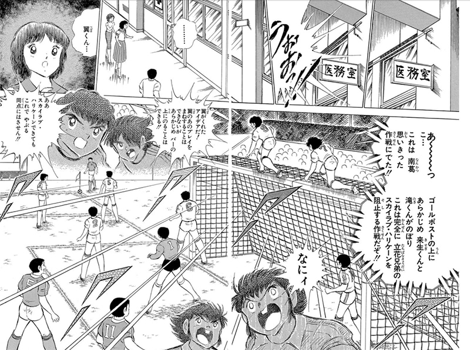
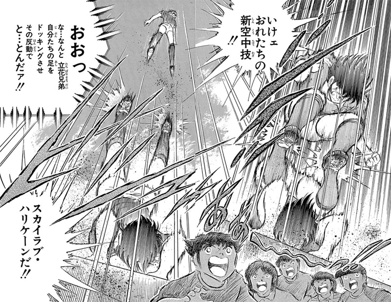
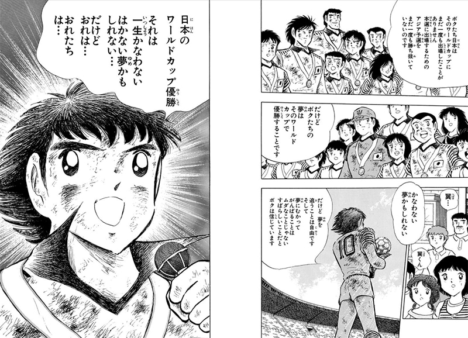
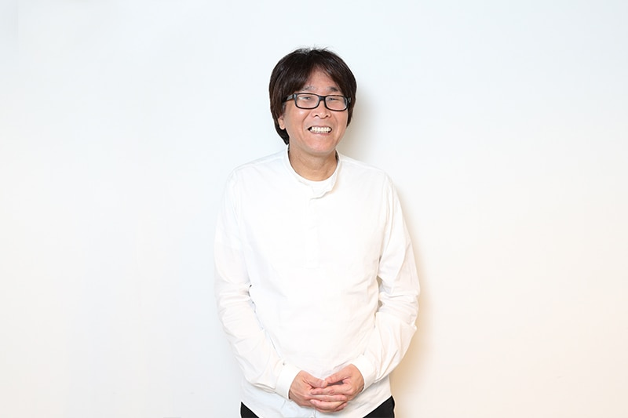
采访出处：https://natalie.mu/comic/pp/captaintsubasa